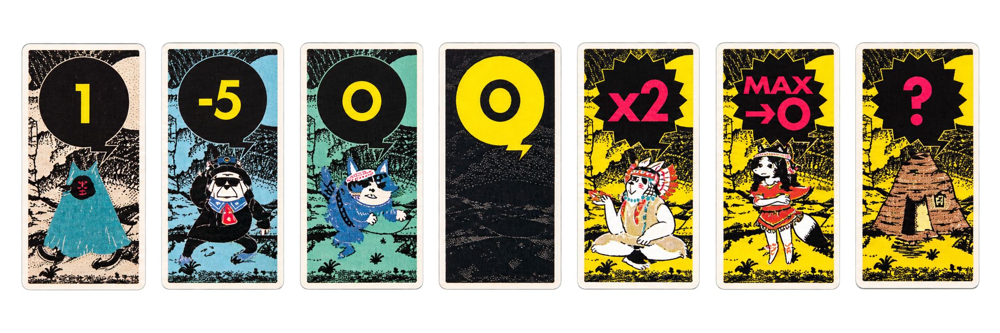

LOSES
数字を宣言した人が負け
GAME 02 / READ · GUESS · RAISE · CALL
COYOTEコヨーテ
他人のカードを読み、場にいるコヨーテの数を推理する。
01 / どんなゲーム？
相手のカードを見る
合計数を推理する
数字を宣言する
怪しいなら「コヨーテ！」
?他人の情報は見える。
自分の情報だけ見えない。
02 / ゲームの目的
自分以外のカードを見て、場にいるコヨーテの数を推理。宣言が実際の合計を超えたら、その宣言者が負けます。
THE CORE MECHANIC / THE BLIND SPOT
見える情報だけで、
見えない1枚を推理する。
04 / カードの持ち方
YOU表を見ない裏面だけが自分に見える
OTHERS数字が見える表面を全員へ向ける
絶対に、自分の表を見ない。
受け取ったらそのまま額へ。
05 / ライフ
06 / ROUND START
ナンバーカードをよく混ぜる
全員に1枚ずつ裏向きで配る
自分は見ず、そのまま額へ
残りを裏向きの山札にする
07 / YOUR TURN
ACTION 01 / RAISE
前の宣言が実際の合計を超えていないと思ったら、前より大きな整数を宣言します。
下げることはできません。宣言できる数字に上限はありません。
08 / ROUND FLOW
上げるたび、
「本当にいるか？」が近づいてくる。
09 / 「COYOTE!」のあと
数字を宣言した人が負け
「コヨーテ！」と言った人が負け
10 / 計算方法
ACTUAL36
順番：まず基本カードを合計し、その後に特殊カードの効果を反映します。
11 / カード一覧
BASIC CARDS基本カード

見えているカードから、場の合計を推理する。
数には加えない。
合計から減らす。−5と−10がある。
SPECIAL CARDS特殊カード
数には加えない。計算後、すべてのナンバーカードをまとめてシャッフル。
すべての基本カードの数字を2倍にする。
その回に出た最大のコヨーテカードの数値を0にする。
持っていた人が山札から1枚引き、その数字を加える。
13 / GAME OVER
3回負けたプレイヤーは脱落。
最後まで生き残った1人が勝者。
LAST ONE
STANDING
身代わり人形を増やし、ライフカードを1人2枚使って3体または4体で始める設定がおすすめです。
14 / QUICK GUIDE
15 / 迷いやすいルール
見てはいけません。表を全員へ向けたまま額に掲げます。
0は不可。1以上の整数を宣言します。
上限はありません。
下げられません。前より大きな数字か「コヨーテ！」のどちらかです。
まず基本カードを合計し、その後に特殊カードの効果を反映します。
直前の宣言が実数より大きければ宣言者。実数以下なら「コヨーテ！」を言った人です。
16 / ゲーム開始前に